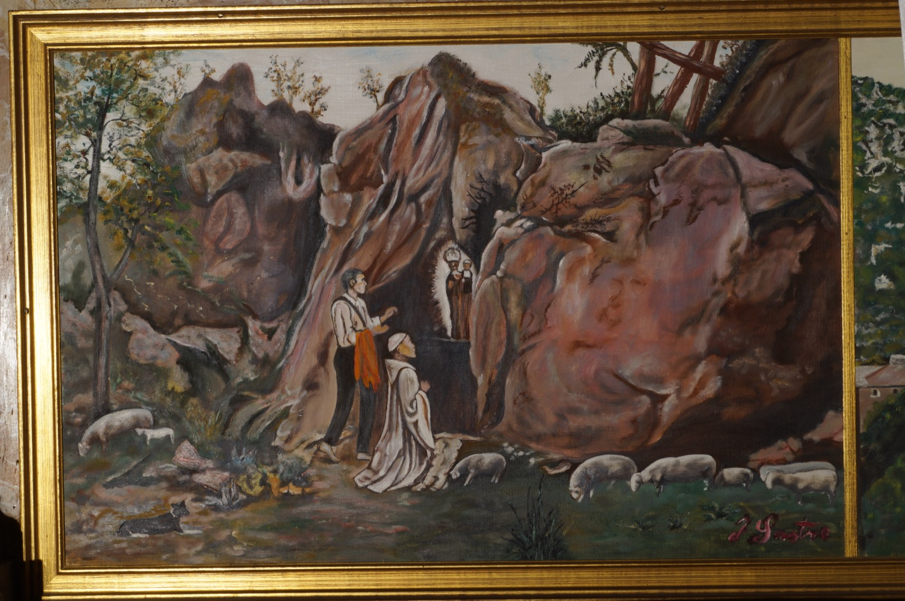

Según cuenta la leyenda, hacia el año 1254, poco después de la conquista de Mallorca por el rey Jaime I, un niño musulmán convertido al cristianismo, que en el bautismo había recibido el nombre de Lluc, apacentaba las ovejas en la alquería musulmana de Arlluch. Cada sábado, el pastorcillo veía unos resplandores celestiales que surgían de unas peñas, acompañados de una música armoniosa. Se lo contó a un monje cisterciense que vivía en la iglesia de Escorca, y el sábado siguiente ambos acudieron juntos al lugar de los hechos.
Siguiendo los resplandores, encontraron dentro de una pequeña cueva una imagen de la Virgen morena y de pequeño tamaño. La trasladaron a Escorca, pero la imagen regresó milagrosamente al lugar donde había sido hallada. El prodigio se repitió varias veces hasta que comprendieron que la Virgen quería ser venerada en el lugar donde había sido encontrada y allí se levantó una capilla donde la custodiaron.
El nombre de la Virgen se ha relacionado tradicionalmente tanto con el del pastorcillo como con el de la alquería donde fue hallada la imagen, y también con la palabra latina lucus, que significa “bosque sagrado”.